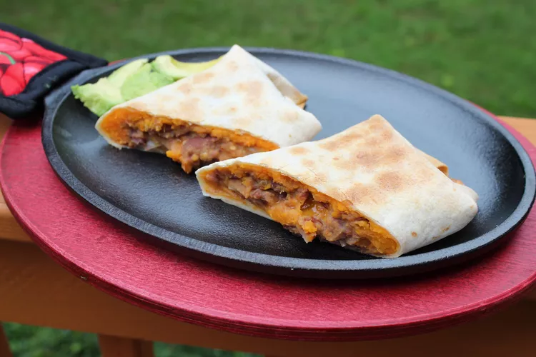

Sweet Potato Burritos

Description
This sweet potato burrito recipe is a little different, but I've had many, many requests for it. Once you've had one, you'll want another. Serve these with sour cream, chopped green onions, and salsa.
Ingredients
- 1 tablespoon vegetable oil
- 1 onion, chopped
- 4 cloves garlic, minced
- 6 cups canned kidney beans, drained
- 2 cups water
- 3 tablespoons soy sauce
- 3 tablespoons chili powder
- 4 teaspoons prepared mustard
- 2 teaspoons ground cumin
- 1 pinch cayenne pepper, or to taste
- 4 cups mashed cooked sweet potatoes
- 12 (10 inch) flour tortillas, warmed
- 8 ounces shredded Cheddar cheese
Steps
- Preheat the oven to 350 degrees F (175 degrees C).
- Heat oil in a medium skillet. Cook and stir onion and garlic in hot oil until onion is soft.
- Mash beans into onion mixture. Gradually stir in water; heat until warm, 2 to 3 minutes. Remove from heat and stir in soy sauce, chili powder, mustard, cumin, and cayenne pepper.
- Divide bean mixture and mashed sweet potatoes evenly between warm tortillas; top with cheese.
- Fold tortillas, burrito-style, around fillings and place on a baking sheet.
- Bake in the preheated oven until warmed through, about 12 minutes.